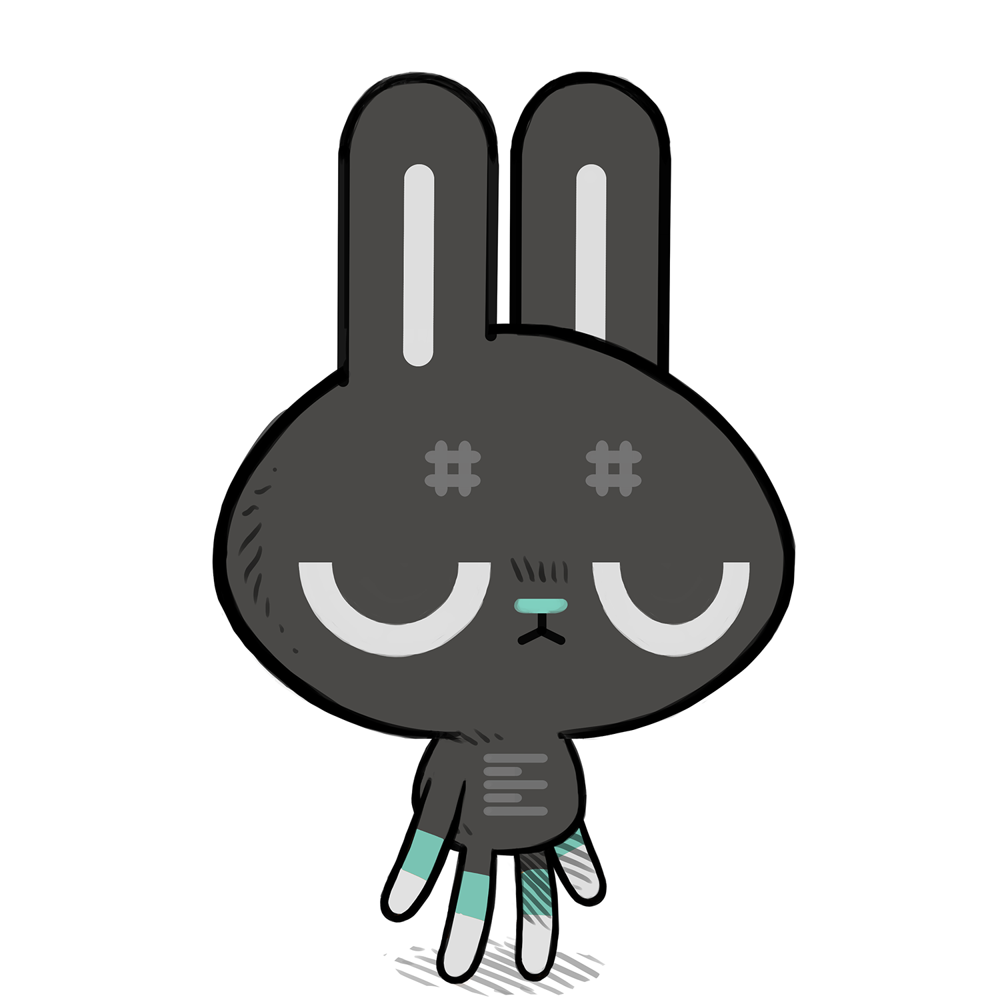

"Bob Flegal designed that font, and called it Cream at
the time, because it was so smooth. It was an experiment to make a font with
the minimum number of elements (a, c, d, g, etc. all have the same curve for
instance). This turns out not to be a great idea for a workaday font, actually.
We realized this after about a month. You would be looking at a browser and
after a while your mind would sort of pop into neutral, waiting to recognize
some words, but getting no strong clues from any of the characters — they
all just looked the same!", Dan Ingalls.

Left is a text editor.
Left is graphical text editor for Varvara. It features Uxntal syntax highlight, label navigation, and directory listing. The alt key is used as a LEAP key to navigate the body of the text.
This text editor is brutally unforgiving, there is no undo and never will. You will accidentaly overwrite and loose your work when learning how to use this editor. Use at your own risk.
Operation Manual
This guide covers how to do most things in left, but first let's start with the basics:
- ctrl+n new file
- ctrl+r rename mode
- ctrl+o open file
- ctrl+enter open selection
- ctrl+s save file
- ctrl+q quit left
Saving a new file
To save a new file, you must first enter the rename mode with ctrl+r the filename will start to blink, allowing you to modify the name. When satisfied with the new filename, press escape to leave the rename mode, and press ctrl+s to save your file with that new name, overwriting any previously existing file with that same name.
Opening a new file
To open a new file, you must first enter the rename mode with ctrl+r the filename will start to blink, allowing you to modify the name. When satisfied with the new filename, press enter to open the file. All unsaved changes to your previous file will be permanently lost.
Injecting a file
You can quickly inject a file, by holding alt while writing the filename, and pressing esc to inject the file at the cursor position. The typical usage of the file injection is to expand abbreviations.
Editing
Copy & Paste
The copy-paste functionality, is done via the snarf
file. When copying a length of text, that selection is written to a
.snarf file, which is visible to the host operating system and
other programs. Make use of this file to create a comfortable editing
experience.
cat > .snarfWrite to snarf file
Navigation
You can open the active directory with ctrl+/, select a file path with mouse2, and open the selected file path with ctrl+enter. When opening the directory file, all your unsaved changes will be lost.
- ctrl+up prev @label
- ctrl+down next @label
- ctrl+left start of line
- ctrl+right end of line
- alt+left prev word
- alt+right next word
Searching
Finding a word is done by holding down the alt key, and typing characters, and releasing alt to jump. Alternatively, you can select a word with mouse2, and jump to the next instance with mouse3.
- mouse1 select character
- mouse2 select word/symbol
- mouse3 find
Navbar
The left-side column, or navbar, list the file's routines, and supports pragma marks to categorize routines. To create a new mark, the syntax is:
( @|SectionName )
The Font
Cream 12 was the default font used by SmallTalk, that Bill Atkinson later converted to the Lisagraf font format.
Source
uxnasm left.tal left.rom view raw
- read manual
- view source
- download rom, 11kb
- download emulator, 80kb

15L08— Left Uxn Release15A09— Left Desktop Release11R08— Left Web Release
incoming roms calendar calendar calendar grail gly format ufx format devlog now lie in it